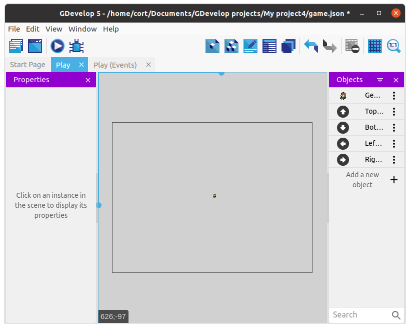
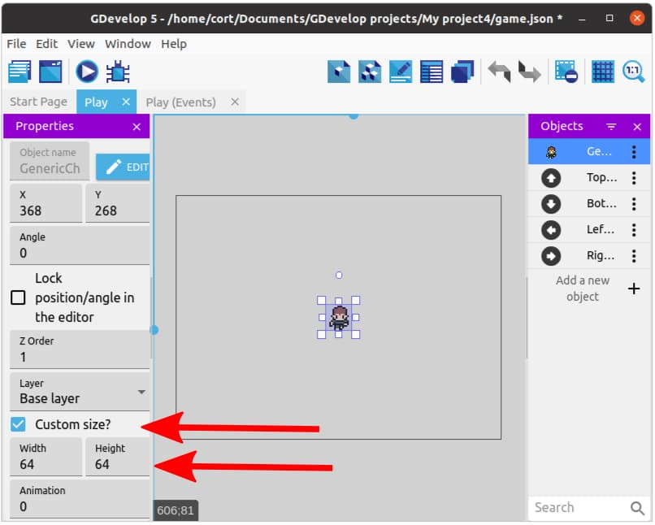

Player
Open up the Play scene and click on Add new object, then from the asset store search for the Generic Character 3 and add it to the game. This character is from the 16x16 RPG Characters category, and you can choose any character from that category.

Most of the character assets in the store are meant for platformer games, and won't be suitable as they lack an up / down animation. If you are using the desktop editor, you can find many free assets online from sites such as OpenGameArt.
Adding Behaviors
Our game will be using a top-down orientation, so just as before, we'll add the Top-down movement behavior. Double click on the player object, switch to the Behaviors tab, and click Add a Behavior to the object.

The Top-down movement behavior is installed by default, so you can just click to add it. This behavior allows us to move the player using the arrow keys, and after adding it, you can tune the parameters (eg. speed and acceleration). For now, just make sure the Rotate object option is disabled, and leave the rest of the settings alone (...or mess around with it. Experimentation is cool.).
Adding an Instance
Drag the player character on to the scene. It looks a little small doesn't it! That's because this images is only 16 pixels tall and 16 pixels wide. Fortunately, we can resize it...

Make sure Custom size is checked, and set both the Width and Height to 64, then position the player at the center of the scene.
